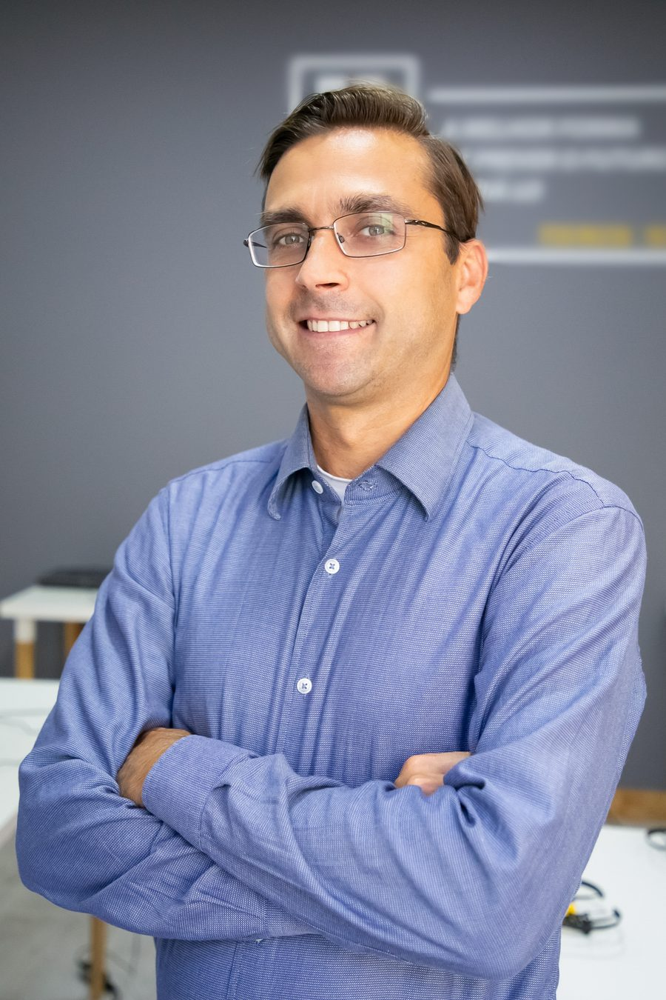
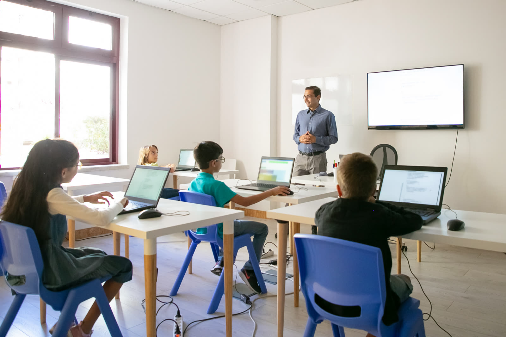

Quem somos

Rafael Nogueira
CEO Rede Lumo Educação
Educação é o que nos move
Nascemos em 2018, a partir da união de um grupo de jovens educadores. Desde o nosso começo, temos um objetivo claro: transformar vidas por meio da educação, unindo excelência acadêmica e inovação pedagógica.
Hoje, somos o maior grupo de educação básica do Brasil. Estamos construindo grandes histórias, sob a liderança de Rafael Nogueira, CEO da Rede Lumo, com marcas fortes e consolidadas, que buscam deixar um legado educacional de excelência para as próximas gerações.
Nossa missão
Ser a melhor solução em educação para todos com aspirações extraordinárias,
transformando vidas e o Brasil.
Nossos Valores
Foco no aluno
Priorizamos soluções que maximizem o aprendizado, a satisfação e a motivação dos alunos.
Trabalho em equipe
Gostamos de pessoas. Cultivamos um ambiente de trabalho respeitoso com postura ética e comunicação objetiva.
Postura de dono
Usamos recursos com responsabilidade. Temos disciplina e foco em resultados. Trabalhamos de forma proativa.
Entusiasmo
Temos brilho nos olhos e paixão pelo que fazemos. Encaramos desafios com otimismo e acreditamos no nosso legado.
Reconhecimento
Com excelência e meritocracia, criamos oportunidades para que as pessoas cresçam e sejam valorizadas.
Nascemos de escolas para escolas
A Rede Lumo nasceu nas nossas escolas, provando que era possível expandir um modelo educacional marcado pela forte qualidade acadêmica com uma estrutura centralizada e organizada. Aliamos inovação e excelência e temos uma cultura alicerçada na paixão pela educação.
Somos um grupo de educadores comprometidos com os nossos alunos, impulsionados pela transformação e apaixonados por escrever grandes histórias.

Construindo uma escola que sente
Toda escola é formada por sentimentos. Por isso, criamos o LIV (Laboratório Inteligência de Vida), nossa solução pedagógica socioemocional. O LIV é uma proposta inovadora na educação brasileira, dando suporte na formação dos alunos, que aprendem mais sobre si, o outro e o mundo, desde a Educação Infantil até o Ensino Médio.
O programa LIV constrói um espaço de fala e escuta nas escolas e já desenvolve a educação socioemocional de mais de meio milhão de alunos.
Conheça o LIVInstituto Lumo: uma parceria transformadora em Goiás
Em 2025, assumimos um papel importante na rede pública de Goiás. Por meio do programa Parceiro da Escola, criamos o Instituto Lumo Estadual, responsável pela gestão administrativa, manutenção e modernização de 20 escolas públicas espalhadas pelo estado. Essa parceria tem como objetivo otimizar a infraestrutura e os processos internos, garantindo ambientes mais seguros, organizados e funcionais. Com isso, as equipes pedagógicas podem concentrar seus esforços na missão de ensino, proporcionando uma formação mais sólida e eficaz aos alunos.
Nossa história
Fundação da Rede Lumo, a partir da união de escolas parceiras que já eram referência em suas regiões.
Lançamento da Plataforma de Ensino e integração de novas escolas parceiras.
Criação do LIV (Laboratório Inteligência de Vida) e expansão para novos estados.
Integração de novas redes de escolas e lançamento do programa de formação de professores.
Expansão geográfica e consolidação como referência em educação básica.
Lançamento do Instituto Lumo, nossa frente de impacto social.
Chegada de novas escolas parceiras e abertura das primeiras unidades no Nordeste.
Início do Instituto Lumo Estadual em Goiás, com a gestão de 20 escolas públicas.
Consolidação como uma das maiores redes de educação básica do país.
Rede Lumo na Mídia
E-mail Assessoria de Imprensa: imprensa@redelumoedu.com.br